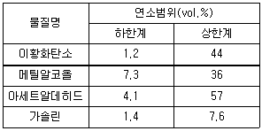

화재감식평가산업기사 (2019-04-27 기출문제)
1과목: 화재 조사론
1. 화염확산에 대한 설명으로 옳지 않은 것은?
- 화염확산은 화재의 부력이나 대기상의 바람으로 인한 유동의 영향을 받는다.
- 화염확산은 일반적으로 화염의 방향 및 연료의 특성에 영향을 받는다.
- 고체의 화염확산속도는 표면장력효과로 인하여 전반적으로 액체의 화염확산속도보다 크다.
- 다공성 고체물질은 다공성이 아닌 물질에 비하여 화염확산속도가 빠르다.
(정답률: 85%)

2. 다음 중 화재의 분류와 가연물이 옳게 연결된 것은?
- A급화재 : 휘발유
- B급화재 : 목재
- C급화재 : 유성페인트
- D급화재 : 금속분말
(정답률: 87%)
3. 화재의 소실 정도를 나타내는 용어와 설명이 옳게 짝지어진 것은?
- 전소:건물의 입체면적 60% 이상 소실되었거나, 잔존부분을 보수하여 재사용이 가능한 것
- 반소:건물의 입체면적 50% 이상 70% 미만이 소실된 것
- 부분소:전소, 반소화재에 해당하지 아니하는 것
- 즉소:건물의 입체면적 30% 이상 소실된 것
(정답률: 89%)
4. 다음의 화재에 대한 설명 중 옳은 것은?
- 최성기단계의 화재는 연료지배형이다.
- 플래쉬오버 단계는 환기지배형 연소에서 연료지배형 연소로 전환되는 단계이다.
- 감쇠기단계의 화재는 연료지배형 연소이다.
- 가연물 양과 환기량은 열방출률과 무관하다.
(정답률: 53%)
5. 소방관련법령상 화재조사의 책임을 가진 사람은?
- 경찰서장
- 보험사
- 소방서장
- 최초 발견자
(정답률: 91%)
6. 화재현장에서 고휘발성 증거물의 수집 시 고려해야 할 사항이 아닌 것은?
- 과학성
- 임의성
- 신속성
- 현장성
(정답률: 86%)
7. 염화비닐 단량체가 폴리염화비닐로 변화되는 반응과정에서 발생할 수 있는 폭발 현상은?
- 산화폭발
- 분진폭발
- 중합폭발
- 전선폭발
(정답률: 85%)
8. 화재조사의 분류 중 화재피해조사에 해당하는 것은?
- 화재의 발견, 통보 및 조기 소화 등의 상황조사
- 대피경로, 대피상의 장애요인 등의 상황조사
- 소방시설의 사용 또는 작동상황 등의 상황조사
- 소화활동 중 사용된 물로 인한 파손 상황조사
(정답률: 83%)
9. 다음 중 화학적 작용에 의한 소화방법에 해당하는 것은?
- 질식소화
- 냉각소화
- 제거소화
- 억제소화
(정답률: 81%)
10. 다음 중 가연성 액체의 일반적인 연소형태와 거리가 먼 것은?
- 포어 패턴(Pour pattern)
- 스플레쉬 패턴(Splash pattern)
- 트레일러 패턴(Trailer pattern)
- 도넛 패턴(Doughnut pattern)
(정답률: 67%)
11. 물질의 상변화에너지에 대한 설명으로 옳은 것은?
- 증발열-기체가 액체로 변화할 때 외부로부터 흡수하는 열량
- 잠열-물질이 상변화 없이 온도만 변할 때 흡수 또는 발생하는 열
- 응고열-액체가 응고점에서 동일 온도의 고체로 변화할 때 방출하는 열량
- 현열-물질이 온도ㆍ압력의 변화 없이 상변화만 일어날 때 흡수 또는 발생하는 열
(정답률: 52%)
12. 다음의 타임라인(Time Line)을 구성하기 위한 이벤트기록들 중, 하드타임(Hard Time)과 가장 거리가 먼 것은?
- 무인경비설비가 화재를 감지한 시각
- 소방서에 화재가 신고된 시각
- 화재가 시작된 시각
- 화재의 진압이 종료된 시각
(정답률: 59%)
13. 소반기본법령상 화재의 원인과 피해조사를 위하여 설치하는 화재조사전담부서를 설치ㆍ운영할 수 없는 곳은?
- 경찰서
- 소방청
- 시ㆍ도의 소방본부
- 소방서
(정답률: 86%)
14. 구획실 화재현상에 대한 설명 중 옳지 않은 것은?
- 롤오버(rollover)는 화염이 천장층에 확산되어 있는 상태를 말한다.
- 롤오버는 플래쉬오버 후에 발생한다.
- 플래임오버(flameover)가 항상 플래쉬오버를 일으키는 것은 아니다.
- 구획실 내부로 유입되는 공기가 충분하지 않으면 연료지배형에서 환기지배형화재로 전이된다.
(정답률: 80%)
15. 다음 중 출화개소 판단 시의 유의사항으로 틀린 것은?
- 발화지점과 연소확산된 경계구역을 구분한다.
- 건물 내ㆍ외부 연소상태를 비교 판단하여 화염의 이동경로를 파악한다.
- 출입구의 방향과 창문, 환기구 등 개구부는 변동요인이 많으므로 제외한다.
- 붕괴되거나 도괴된 경우, 해당 취약요인을 확인한다.
(정답률: 88%)
16. 다음 중 저항이 7Ω인 전선에 5A의 전류가 1분 동안 흐른 경우, 전선에서 발생하는 발열량(줄열)으로 옳은 것은?
- H=I×R×t=5×7×60=2100J
- H=I2×R×t=52×7×60=1⑤00J
- H=I2×R2×t=52×72×60=73500J
- H=I×R2×t2=5×72×602=882000J
(정답률: 66%)
17. 연소 진행과정 추적과 관련하여 화재원인 판정절차 순서를 나열한 것 중 옳은 것은?
- 발화층, 발화실의 판정→발화원, 발화원인의 판정→발화개소의 판정→발화건물의 판정
- 발화층, 발화실의 판정→발화원, 발화원인의 판정→발화건물의 판정→발화개소의 판정
- 발화건물의 판정→발화층, 발화실의 판정→발화개소의 판정→발화원, 발화원인의 판정
- 발화건물의 판정→발화원, 발화원인의 판정→발화층, 발화실의 판정→발화개소의 판정
(정답률: 77%)
18. 화재시건 관계자 진술방법에 관한 설명으로 틀린 것은?
- 관계자의 인권을 고려하여 유도심문을 하여야 한다.
- 관계자의 기억이 희박해지기 이전에 최대한 빨리 질문하는 것이 좋다.
- 소방기본법상 질문을 행하는 주체는 소방청장ㆍ소방본부장 또는 소방서장이다.
- 피질문자의 심리가 충분히 안정된 상태에서 진술할 수 있는 장소를 선택하는 것이 좋다.
(정답률: 81%)
19. 화재현장에서 열, 연기 또는 화염 흐름의 방향을 표시하는 것으로써, 화재현장도에 사용되는 화살표는 무엇인가?
- 열관성
- 타임라인
- 열방출율
- 열 및 화염 벡터
(정답률: 66%)
20. 메탄 75vol.%, 에탄 15vol.%, 프로판 10vol.%가 섞여있는 혼합가스의 공기 중 연소하한계는? (단, 메탄, 에탄, 프로판의 연소하한계는 각각 5.0vol.%, 3.0vo%, 2.0vol.%이다.)
- 2 vol.%
- 4 vol.%
- 6 vol.%
- 8 vol.%
(정답률: 75%)
2과목: 화재 감식론
21. 다음 중 가열에 의해 연화되면서 가소성을 갖는 합성수지에 해당하지 않는 것은?
- 폴리염화비닐
- 에폭시수지
- 폴리스틸렌
- 폴리에틸렌
(정답률: 73%)
22. LPG차량의 구성품 중, LPG 용기의 밸브 색상이 옳게 연결된 것은?
- LPG 충전밸브 : 황색
- 체크밸브 : 적색
- 액체 송출밸브 : 적색
- 기체 송출밸브 : 청색
(정답률: 66%)
23. 면적 100m2, 높이 2m인 내화조(환기율은 0.4회/h) 내부에 도시가스관에서 누설된 가스가 축적될 때, 얼마만큼의 누설량부터 폭발하한계에 도달하겠는가? (단, 도시가스의 폭발하한계는 5.6 Vol.%)
- 11.2m3
- 15.68m3
- 112m3
- 156.8m3
(정답률: 50%)
24. 정전기의 방전 원리 중 액체가 파이프 등의 수송관을 흐를 때, 정전기가 발생하는 현상은?
- 마찰대전
- 박리대전
- 유동대전
- 분출대전
(정답률: 79%)
25. 과전류에 의한 전선의 변화에 관한 설명으로 틀린 것은?
- 통전전류가 클수록 짧은 시간에 용단된다.
- 용융된 부분과 용웅되지 않은 부분의 경계가 명확하다.
- 회로 전체 배선에 과열된 흔적이 관찰된다.
- 용융되지 않은 전선의 표면은 산화작용에 의해 변색 산화되어 구부리면 표면의 일부가 박리되어 떨어진다.
(정답률: 49%)
26. 고압가스 안전관리법령상 고압가스에 속하지 않는 것은?
- 상용의 온도에서 압력이 1메가파스칼 미만이 되는 압축가스로서 실제로 그 압력이 1메가파스칼 미만이 되는 것
- 섭씨 15도의 온도에서 압력이 0파스칼을 초과하는 아세틸렌가스
- 상용의 온도에서 압력이 0.2메가파스칼 이상이 되는 액화가스로서 실제로 그 압력이 0.2메가파스칼 이상이 되는 것
- 섭씨 35도의 온도에서 압력이 0파스칼을 초과하는 액화가스 중 액화시안화수소, 액화브롬화메탄 및 액화산화에틸렌가스
(정답률: 46%)
27. 차량화재의 발화원 중, 기계적 스파크에 대한 설명으로 틀린 것은?
- 차량이 주행하고 있거나 움직이고 있을 때, 금속 대 금속 간의 접촉(강철 또는 마그네슘)불꽃을 생성 시킬 수 있다.
- 차량이 주행하고 있거나 움직이고 있을 때, 금속 대 포장도로 간의 접촉은 가스 증기 또는 분무상태의 액체와 함께 불꽃을 생성시킬 수 있다.
- 알루미늄 대 도로 표면의 스파크의 경우, 알루미늄의 녹는점이 높아 대부분의 물질에서 발화되기 용이하다.
- 금속 간 접촉은 구동 폴리(drive pulley), 구동 축 또는 베어링 같은 곳에서 발생할 수 있다.
(정답률: 66%)
28. 다음 중 동소체가 아닌 것은?
- 산소와 오존
- 흑연과 다이아몬드
- 황린과 오황화린
- 단사황과 사방황
(정답률: 60%)
29. 다음 중 우발적 원인에 의한 방화에 속하지 않는 것은?
- 부부싸움 중 시너를 뿌리고 방화
- 우울증에 시달리던 자가 자살방화
- 약물 중독에 의한 환각 등에 의한 방화
- 보험금 편취 목적으로 방화
(정답률: 86%)
30. 실화를 위장한 방화에 애한 설명으로 틀린 것은?
- 방화자가 이득 등을 취하기 위하여, 화재조사자가 화재원인조사에 있어서 실화로 잘못된 판단을 하도록 위장하려는 의도가 있다.
- 보험금을 사취하기 위한 방화에 있어서 발화장소 주변에 모기량, 촛불, 발열기구, 노후가전제품 등을 이용하여 착화시킨 후 실화로 위장하려는 경향이 있다.
- 화재조사의 현장조사 시, 방화자는 실화가능성을 쉽게 인정하려는 경향이 있으며 필요 이상으로 자세하게 설명하려는 경항을 보인다.
- 방화자는 방화증거물 및 현장을 잘 보존하여 화재 조사자에게 협조하려는 태도를 보인다.
(정답률: 75%)
31. 발화원에 대한 검토 시 주의사항으로 옳지 않은 것은?
- 발화에 이른 경과를 논리적으로 고찰한다.
- 관계자와 함께 화재현장에 있는 물건의 가치와 발화가능성에 대해 협의한다.
- 화재원인이 거의 특정된 시점에서 재차 발화개소에서 주위로 타서 번져간 상황이 타당성이 있는지 검토한다.
- 감식, 감정하는 물건의 위치를 계측한 후 채취한다.
(정답률: 71%)
32. 다음 물질 중, 위험도가 가장 큰 것은?

- 이황화탄소
- 메틸알코올
- 아세트알데히드
- 가솔린
(정답률: 67%)
33. 다음 중 인화점이 가장 낮은 물질은?
- 톨루엔
- 메틸알코올
- 등유
- 크레오소트유
(정답률: 61%)
34. 담배의 궐련지(Cigarette paper) 착화온도는 섭씨온도 몇 ℃인가?
- 250℃ 전후
- 300℃ 전후
- 350℃ 전후
- 400℃ 전후
(정답률: 49%)
35. 양초를 구성하는 주요 성분이 아닌 것은?
- 파라핀
- 경화납
- 스테아린산
- 펜타크롤페놀
(정답률: 46%)
36. 다음 중 산불의 초기 연소현상에 대한 설명으로 옳은 것은?
- 강풍 또는 급경사지에서는 원형으로 연소
- 소능선이 있는 경사면에서는 산정상을 향하여 빠르게 연소
- 무풍 평탄지에서는 발화점을 중심으로 부채꼴 모양으로 연소
- 풍량이 일정하지 않거나 경사면에서는 풍향과 평행으로 연소
(정답률: 70%)
37. 배선기구 접속 및 접속부의 과열 원인이 아닌 것은?
- 점접 표면에 먼지 등 이물질 부착
- 허용량 이하의 전압, 전류 사용
- 접촉면적 감소
- 미세한 개폐동작이 반복하는 채터링 현상
(정답률: 74%)
38. 항공기 화재발생시 전기적 또는 케이블기구에 의해 기능을 차단하는 시스템 중 관계없는 장치는?
- 물 차단
- 오일 차단
- 유압 차단
- 연료 차단
(정답률: 67%)
39. 가정용 가스레인지에 사용하는 액화석유가스 용기의 내용적이 125L인 경우, 최대 충전량은 몇 kg인가? (단, 가스정수는 프로판 2.35이다.)
- 53.19
- 60.97
- 256.25
- 293.75
(정답률: 53%)
40. 다음 중 성심리학적 방화범의 분류에 해당하지 않는 것은?
- 구강기 방화범
- 항문기 방화범
- 비강기 방화범
- 남근기 방화범
(정답률: 67%)
3과목: 증거물 관리 및 법과학
41. 화재현장 기록용 디지털 카메라에 대한 설명으로 옳지 않은 것은?
- 촬영 후에 즉시 현장에서 확인이 가능하다.
- 다른 매체와 폭넓게 호환이 가능하다.
- 저장이 편리하고 장기간 보존할 수 있다.
- 촬영 대상의 온도를 확인할 수 있다.
(정답률: 83%)
42. 다음 중 화재폭발 사고를 시간의 순서에 따라 그래픽 또는 서술식으로 묘사하는 조사방법으로 적합한 것은?
- PERT
- 타임라인
- 시스템분석
- 컴퓨터모델링
(정답률: 79%)
43. 다음의 전기적 용융흔적에 대한 설명 중 옳은 것은?
- 구형이며 광택이 없고, 모제부와 용융부의 경계면이 형성되지 않는다.
- 외부염에 의한 단락흔은 구리의 초기결정 이외의 금속결정으로 변형되지 않는다.
- 용융되지 않은 전선의 표면은 변색되어 있으며, 구부리면 표면의 일부가 박리되어 떨어지는 경우가 많다.
- 성분분석결과 전기적 단락흔은 다량의 탄소가 검출된다.
(정답률: 57%)
44. 다음 중 관계자 질문을 통해 정보를 수집하고자 할 때의 유의사항으로 옳은 것은?
- 임의진술을 확보한다.
- 선입관 없이 유도심문을 한다.
- 미성년자의 진술도 그래도 인용한다.
- 개인의 사생활 노출은 감수하도록 한다.
(정답률: 65%)
45. 다음의 화재현장에 잔류된 유리형태 조사에 대한 설명으로 옳지 않은 것은?
- 열에 의해 파괴된 유리의 표면에 나타난 파괴선은 길고 구불구불한 불규칙형태를 보이는 경우가 많다.
- 열에 의해 파손된 유리의 파단면은 매끄러운 상태를 보인다.
- 조사할 때는 최소한의 조각을 수거하여 파괴기점을 파악한다.
- 폭발에 의하여 파손된 유리의 파단형태는 방사형태보다는 평행선에 가까운 모습을 보인다.
(정답률: 57%)
46. 화재조사 및 보고규정상의 화재현장보존을 위한 소방활동구역의 설정에 대한 설명으로 적합하지 않은 것은?
- 소방서장은 현장조사를 위하여 필요하다고 인정될 때에는 소방활동구역을 설정할 수 있다.
- 소방활동구역의 설정은 필요한 최대의 범위로 한다.
- 소방활동구역 관리는 수사기관과 상호협조하여야 한다.
- 소방활동구역 표시는 로프 등으로 범위를 한정하고 경고판을 부착한다.
(정답률: 78%)
47. 무색ㆍ무취무미의 환원성이 강한 가스로 인체내의 헤모글로빈과 결합하여 산소의 운반기능을 약화시키는 연소생성가스로 옳은 것은?
- 일산화탄소
- 이산화탄소
- 암모니아
- 아황산가스
(정답률: 80%)
48. 다음 중 화재현장을 효과적으로 촬영하기 위한 렌즈에 대한 설명으로 옳지 않은 것은?
- 줌렌즈는 물고기 눈처럼 둥글게 튀어 나와서 피쉬 아이(fish eye)라고 불린다.
- 좁은 공간에서 넓은 화각을 원할 때는 광각렌즈를 사용한다.
- 망원렌즈는 멀리 있는 피사체 촬영 시 편리하다.
- 표준렌즈는 50도 안팎의 화각으로 원근감, 화상의 크기 등이 육안에 가장 가깝다.
(정답률: 61%)
49. 다음 중 표피 및 진피까지 손상되며 수포가 형성되는 화상으로 옳은 것은?
- 가. 1도 화상
- 2도 화상
- 3도 화상
- 4도 화상
(정답률: 74%)
50. 다음 중 9의 법칙에 대한 설명으로 옳은 것은?(오류 신고가 접수된 문제입니다. 반드시 정답과 해설을 확인하시기 바랍니다.)
- 20세 남성의 대퇴부 전면 손상은 9×2%이다.
- 영아의 양팔 손상은 18%이다.
- 어린이의 외음부 손상은 2%이다.
- 성인의 두부 손상은 18%이다.
(정답률: 33%)
51. 화재사에서는 화재에 대한 생활반응과 사후계속적인 열의 작용에 의한 사후변화가 섞여 있다. 다음 중 외부소견의 생활반응으로 옳은 것은?
- 시반은 일산화탄소헤모글로빈(COHb)의 형성으로 선홍색을 띤다.
- 장갑상 및 양말상 탈락으로 벗겨질 때가 있다.
- 피부균열 및 파열되어 절창 또는 열창과 유사한 소견을 보인다.
- 투사형자세로 근육이 응고되어 수축되는 소위 열경직 현상을 보인다.
(정답률: 66%)
52. 다음 중 증거물 수집과정에서 오염을 막기 위한 방법과 가장 관련이 적은 것은?
- 면장갑 대신 일회용 비닐장갑을 이용한다.
- 빗자루, 부삽 등 증거수집도구는 오염이 되지 않도록 조치한 후에 사용한다.
- 정확한 증거물의 수집을 위하여 무수(無水)성 또는 기타 형태의 클리너를 사용한다.
- 증거물 수집용기의 금속 뚜껑을 수집도구로 활용한다.
(정답률: 53%)
53. 다음 중 화재증거물수집관리규칙상 증거물의 정의로 옳은 것은?
- 화재와 관련 있는 가연물 및 개연성이 있는 모든 개체를 말한다.
- 화재와 관련 있는 물건 및 필연성이 있는 모든 개체를 말한다.
- 화재와 관련 있는 가연물 및 필연성이 있는 모든 개체를 말한다.
- 화재와 관련 있는 물건 및 개연성이 있는 모든 개체를 말한다.
(정답률: 53%)
54. 화재조사 및 보고규정상에 건축ㆍ구조물, 자동차ㆍ철도차량, 임야, 선박ㆍ항공기 화재 등 각기 다른 성격의 화재에 대하여 각각의 서식에 따라 작성하도록 규정된 화재조사서류로 적합한 것은?
- 화재유형별조사서
- 화재감식ㆍ감정보고서
- 방화ㆍ방화의심조사서
- 질문기록서
(정답률: 78%)
55. 다음 중 각 금속의 용융점이 높은 것부터 낮은 것의 순서로 적절하게 연결된 것은?
- 크롬→텅스텐→아연→마그네슘→주석
- 텅스텐→크롬→주석→마그네슘→아연
- 텅스텐→크롬→마그네슘→아연→주석
- 크롬→텅스텐→주석→아연→마그네슘
(정답률: 57%)
56. 다음 중 유류화재로 추정되는 현장에서 수거된 증거물에 대한 분석절차로 적합한 것은?
- 수거→정제→여과→침지→적외선흡수스펙트럼 분석→가스크로마토그래피법
- 수거→여과→침지→정제→적외선흡수스펙트럼 분석→가스크로마토그래피법
- 수거→침지→여과→정제→적외선흡수스펙트럼 분석→가스크로마토그래피법
- 수거→침지→정제→여과→적외선흡수스펙트럼 분석→가스크로마토그래피법
(정답률: 65%)
57. 다음의 화재증거물수집관리규칙상 화재현장 사진 및 비디오 촬영 시 유의사항 중 적합하지 않은 것은?
- 화재조사요원은 규모가 작은 화재는 사진촬영 등을 생략할 수 있다.
- 최초 도착하였을 때의 원상태를 그대로 촬영하여야 한다.
- 소재와 상태가 명백히 나타나도록 하고 필요에 따라 구분이 용이하게 번호표 등을 넣어 촬영한다.
- 연소 확대 경로 및 증거물 기록에 대한 번호표와 화살표를 표시한 후에 촬영하여야 한다.
(정답률: 87%)
58. 다음 중 화재진압 시 화재현장 보존을 위한 진압대원의 주의사항으로 옳지 않은 것은?
- 최초 발화지역으로 판단되는 경우, 수압을 강하게 하여 직사직수로 신속하게 진압한다.
- 세척작업, 벽의 파괴 등을 위한 소방호스사용은 최초 발화 추정지역에서 충분히 떨어진 곳에서 하도록 한다.
- 화재패턴이 남아 있을 가능성이 있어 조사가 필요한 바닥면의 경우, 소방호스 및 물의 사용을 자제하여야 한다.
- 고인물이 있는 바닥이 샐 때에는 새는 구멍을 찾아서 증거물 및 화재패턴이 소실되지 않도록 한다.
(정답률: 78%)
59. 다음 중 증거물의 수집용기 및 포장에 적합하지 않는 것은?
- 비닐봉지
- 금속캔
- 유리병
- 알루미늄 호일
(정답률: 69%)
60. 화재현장 주요 사진촬영 대상에 대한 설명으로 틀린 것은?
- 발굴 전의 발화지점 부근
- 소손현장의 전경
- 관계자 진술에 언급된 지점
- 연소경로
(정답률: 64%)
4과목: 화재조사 관계법규 및 피해평가
61. 다음 중 화재조사서류 작성상의 유의사항으로 옳지 않은 것은?
- 간결ㆍ명료하게 알기 쉬운 문장으로 작성
- 오자ㆍ탈자 등이 없는 문서로 작성
- 기재항목이 빠지지 않도록 필요한 서류를 첨부
- 차량과 선박 화재의 조사서류는 동일 양식으로 작성
(정답률: 84%)
62. 다음 중 질문기록서 작성과 관련된 기재사랑으로 옳지 않은 것은?
- 질문기록서를 작성하는 조사관의 소속, 계급, 성명을 기재한다.
- 답변자의 인적사항 및 화재발생 대상과의 관계를 기재한다.
- 임야화재의 경우도 질문기록서를 반드시 작성하여야 한다.
- 질문, 일시 및 장소를 기재한다.
(정답률: 78%)
63. 다음 중 화재조사 및 보고규정상 화재현황조사서의 첨부서류로 적합하지 않은 것은?
- 화재 유형별 조사서
- 화재피해조사서
- 화재현장조사서
- 질문기록서
(정답률: 55%)
64. 다음 중 화재가 발생한 건축물에 대하여 소방기관이 화재조사를 위해 해당 건축물에 출입ㆍ조사하는 권한 및 벌칙과 관련된 사항으로 옳지 않은 것은?
- 건축물의 관계인에게 보고 또는 자료 제출을 요구할 수 있다.
- 관계 공무원은 화재조사에 대한 권한을 표시하는 증표를 관계인에게 제시하여야 한다.
- 화재조사 공무원은 관계인의 정당한 업무를 방해할 수 있으나, 화재조사에서 알게 된 비밀을 누설해서는 아니 된다.
- 관계인이 관계 공무원의 출입 또는 조사를 정당한 사유 없이 거부하거나 방해할 경우에는 200만원 이하의 벌금에 처한다.
(정답률: 68%)
65. 다음 중 화재조사 및 보고규정에서 정하고 있는 용어정의에 대한 내용으로 옳지 않은 것은?
- “감식”이란 화재원인의 판정을 위하여 전문적인 지식, 기술 및 경험을 활용하여 주로 시각에 의한 종합적인 판단으로 사실관계를 명확하게 규명하는 것을 말한다.
- “발화지점”이란 발화의 최초원인이 된 불꽃 또는 열을 말한다.
- “발화요인”이란 발화열원에 의하여 발화로 이어진 연소현상에 영향을 준 인적ㆍ물적ㆍ자연적인 요인을 말한다.
- “내용연수”란 고정자산을 경제적으로 사용할 수 있는 연수를 말한다.
(정답률: 63%)
66. 화재조사 및 보고규정에 따른 최종잔가율의 정의로 옳은 것은?
- 고정자산을 경제적으로 사용할 수 있는 연수
- 피해물의 종류, 손상 상태 및 정도에 따라 피해액을 적정화시키는 일정한 비율
- 화재 당시에 피해물의 재구입비에 대한 현재가의 비율
- 피해물의 경제적 내용연수가 다한 경우 잔존하는 가치의 재구입비에 대한 비율
(정답률: 66%)
67. 다음 중 소방기본법령상 저수조의 설치기준으로 옳지 않은 것은?
- 지면으로부터의 낙차가 5미터 이상일 것
- 흡수부분의 수심이 0.5미터 이상일 것
- 흡수에 지장이 없도록 토사 및 쓰레기 등을 제거할 수 있는 설비를 갖출 것
- 흡수관의 투입구가 사각형의 경우에는 한 변의 길이가 60센티미터 이상, 원형의 경우에는 지름이 60센티미터 이상일 것
(정답률: 66%)
68. 다음의 소방기본법에 관한 내용 중 옳은 것은?
- 국가는 화재, 재난ㆍ재해, 그 밖의 위급한 상황으로부터 국민의 생명ㆍ신체 및 재산을 보호하기 위하여 소방업무에 관한 종합계획을 3년마다 수립ㆍ시행하여야 한다.
- 소방본부장이나 소방서장은 소방활동을 할 때에 긴급한 경우에는 이웃한 소방본부장 또는 소방서장에게 소방업무의 응원(應援)을 요청할 수 있으며, 소방업무의 응원 요청을 받은 소방본부장 또는 소방서장은 정당한 사유가 없어도 그 요청을 거절할 수 있다.
- 소방대는 화재, 재난ㆍ재해, 그 밖의 위급한 상황이 발생한 현장에 신속하기 출동하기 위하여 긴급할 때라도 일반적인 통행에 쓰이지 아니하는 도로ㆍ빈터 또는 물 위로 통행하여서는 안된다.
- 소방본부장, 소방서장 또는 소방대장은 화재, 재난ㆍ재해, 그 밖의 위급한 상황이 발생한 현장에서 소방활동을 위하여 필요할 때에는 그 관할역에 사는 사람 또는 그 현장에 있는 사람으로 하여금 사람을 구출하는 일 또는 불을 끄거나 불이 번지지 아니하도록 하는 일을 하게 할 수 있다.
(정답률: 74%)
69. 다음 중 화재조사 및 보고규정상 화재조사서류의 보존기간으로 옳은 것은?
- 3년
- 5년
- 반영구
- 영구
(정답률: 73%)
70. 다음 중 질문기록서를 생략할 수 있는 경우가 아닌 것은?
- 쓰레기 화재
- 가로등 화재
- 전봇대 화재
- 구조물 화재
(정답률: 69%)
71. 다음의 화재조사와 관련된 설명 중 옳은 것은?
- 화재조사 전담부서는 소방청, 시ㆍ도의 소방본부, 소방서에 설치한다.
- 소방본부장은 대형화재가 발생하면 조사본부를 설치ㆍ운영할 수 있다. 이 경우 소방서 조사요원은 소방본부 조사업무를 지원하여야 한다.
- 동일범이 아닌 각기 다른 사람에 의한 방화, 불장난은 동일 대상물에서 발화하는 경우 1개의 화재로 본다.
- 발화열원에 의해 불이 붙고 이 물질을 통해 제어하기 힘든 화세로 발전한 가연물을 발화물이라 한다.
(정답률: 68%)
72. 다음의 화재현장조사서 도면 작성에 관한 내용 중 옳은 것은?
- "A건물“ 평면도, ”주방“ 평면도와 같은 표현은 삼가고, ”발화건물“ 평면도 ”발화지점“ 평면도 등으로 표현한다.
- 조사자가 구체적인 기술을 하지 않고 도면을 주체로 구성한 현장조사서도 적절한 조사서로 볼 수 있다.
- 도면의 방위표시는 원칙적으로 지도와 같은 형태도 ｢북｣을 위쪽으로 작성하고, 축척은 통상적으로 “O평”으로 기재한다.
- 제도기호 등의 표준화된 기호로 작성하는 것이 기본이며 필요에 따라서는 문자도 삽입하여 도면을 작성한다.
(정답률: 65%)
73. 다음 중 화재 당시에 피해물의 재구입비에 대한 현자가의 비율을 의미하는 용어로 옳은 것은?
- 손해율
- 보정율
- 잔가율
- 최종잔가율
(정답률: 70%)
74. 치장벽돌조 슬래브지붕 2층 건물의 1층 점포벽면 모서리에 설치된 선풍기에서 발생한 화재로 발화층은 바닥 24m2, 천장 10m2, 2면의 벽 6m2가 그을리거나 소실되는 피해가 발생했고, 2층은 1면의 벽 3m2, 천장 2m2가 그을리거나 오염되었다. 소실면적(m2)은 얼마인가?
- 9
- 10
- 24
- 25
(정답률: 55%)
75. 화재조사서류 작성 시 유의사항에 대한 설명 중 옳지 않은 것은?
- 화재조사서류는 요점을 파악하기 어려운 문장의 사용을 피해야 한다.
- 각 양식상 필요한 기재항목이 기재되지 않은 서류는 서류로서의 기본적인 요인이 미비한 것이므로 주의하여야 한다.
- 조사서류에는 각각의 작성 목적이 있으므로 문장표현이나 각 조사서의 작성자 등을 어떻게 해서든 일치시켜야 한다.
- 과학용어ㆍ학술용어 등 말을 바꿀 수 없는 전문영어는 별개로 하되 평이하고 쉬운 문장으로 작성한다.
(정답률: 71%)
76. 다음의 화재현장조사서 작성요령 중 옳지 않은 것은?
- 대규모 건물화재 등에서 현장조사를 분담하여 실시한 경우에는 분담자 각자가 분담한 장소의 현장조사서를 작성한다.
- 작성자는 현장조사를 직접 행한 자로 한정하고 다른 사람이 대신하여 작성하는 것은 인정되지 않는다.
- 발화원인으로 된 화원에 대하여 긍정해야할 사실만 객관적으로 기록하고 화원으로서 부정해야할 사실은 기재하지 않는다.
- 화재조사서는 발화건물의 판정 등과 관련하여 평이한 표현으로 계통적 순서에 입각하여 간결하게 기재하여야 한다.
(정답률: 66%)
77. 집기비품의 피해액 산정에 관한 설명 중 옳은 것은?
- 간이평가방식은 "m2“당 표준단가×소실면적×[1(0.8×경과년수/내용년수)]×손해율”이다.
- 실질적ㆍ구체적 방식은 집기비품의 개별성이 인정되어야 하는 때에 적용한다.
- 집기비품의 수침오염 정도가 심한 경우 손해율은 50%이다.
- 실질적ㆍ구체적 방식은 “재구입비×[1-(0.9×내용년수/경과년수)]×손해율”이다.
(정답률: 36%)
78. 화재조사 및 보고규정상 방화ㆍ방화의심 조사서 작성 시 기재항목으로 적합하지 않은 것은?
- 방화도구
- 방화의심 사유
- 도착 시 초기상황
- 방화자의 인상착의 및 직업
(정답률: 70%)
79. 다음의 화재현장소사서 도면작성 방법 중 옳은 것은?
- 방 배치가 복잡한 건물에 있어서는 건물의 사방에 각각의 기준점을 정하고 중앙기둥 등으로 좁히면서 측정하면 비교적 이해하기 쉽다.
- 입체도는 축척에 맞춰 작성해야 하므로, 너무 작거나 얇은 것이라도 정확한 축적을 기재한다.
- 도면작성에 있어서는 건물 계단과 발화 추정지점, 연소 확대경로 위주로 한다.
- 거리측정은 기둥의 중심에서 다른 기둥의 중심까지로 기준점을 통일한다.
(정답률: 65%)
80. 화재조사 및 보고규정상의 화재 사후조사에 대한 내용 중 옳은 것은?
- 소방대가 출동하지 아니한 화재장소의 화재증명원 발급요청이 있는 경우에도 즉시 발급할 수 있다.
- 사후조사는 발화장소 및 발화지점 등 현장이 보존되어 있는 경우에만 조사를 할 수 있다.
- 사후조사의 경우에도 화재현장 출동보고서를 반드시 작성하여야 한다.
- 화재증명원의 발급 시 재산피해 및 인명피해에 대하여 기재하지 않는다.
(정답률: 63%)